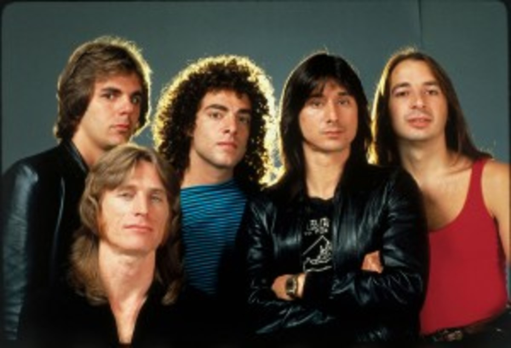
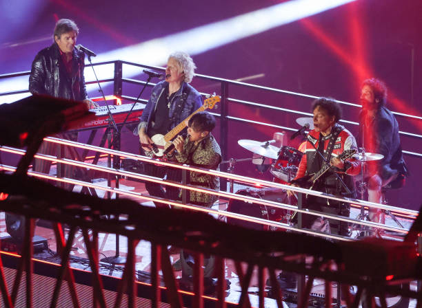

Don't Stop Believin
by: Jorney

Just a small town girl
Livin' in a lonely world
She took the midnight train going anywhere
Just a city boy
Born and raised in South Detroit
He took the midnight train going anywhere
A singer in a smokey room
A smell of wine and cheap perfume
For a smile they can share the night
It goes on and on and on and on
Strangers waitin'
Up and down the boulevard
Their shadows searchin' in the night
Streetlights, people
Livin' just to find emotion
Hidin' somewhere in the night
Workin' hard to get my fill
Everybody wants a thrill
Payin' anything to roll the dice
Just one more time
Some'll win, some will lose
Some are born to sing the blues
Whoa, the movie never ends
It goes on and on and on and on

Strangers waitin'
Up and down the boulevard
Their shadows searchin' in the night
Streetlights, people
Livin' just to find emotion
Hidin', somewhere in the night
Don't stop believin'
Hold on to that feelin'
Streetlights, people
Don't stop believin'
Hold on
Streetlights, people
Don't stop believin'
Hold on to that feelin'
Streetlights, people